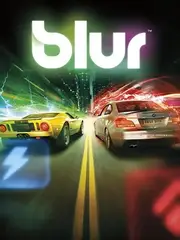

 |
|
| Tiempo de juego | 5m 55s |
| Última actividad | 16/1/2026 11:40:42 |
| Añadido | 27/7/2025 0:40:57 |
| Modificado | 3/12/2025 11:51:55 |
| Estado de finalización | Jugado |
| Librería | Playnite |
| Fuente | |
| Plataforma | PC (Windows) |
| Fecha de lanzamiento | 25/5/2010 |
| Puntuación de la Comunidad | 76 |
| Puntuación de la Crítica | 79 |
| Puntuación de usuario | |
| Género | Racing Sport |
| Desarrollador | Bizarre Creations |
| Editor | Activision Square Enix |
| Característica | Multiplayer Single Player Split Screen |
| Enlaces | |
| Tag | |
Imaginate un Mario Kart, pero sacale los honguitos y las bananas y metele BMWs, Mustangs y Audis tirándose misiles teledirigidos en medio de Tokio. Eso, así de simple y genial, es Blur. Es el famoso y nunca bien ponderado "Mario Kart para adultos", y es tan espectacular como suena.
Este juegazo lo hicieron los capos de Bizarre Creations, los mismos del mítico Project Gotham Racing. Los tipos sabían un montón de autos y lo mezclaron con un sistema de combate arcade que es pura adrenalina. La joda es simple: corrés con naves del mundo real, pero por la pista vas levantando power-ups para hacer mierda a los demás. Tenés misiles, escudos, un empujón de energía, minas... un quilombo hermoso.
El manejo es una delicia, a mitad de camino entre la simulación y el arcade más puro. Cada carrera es un caos impredecible de explosiones, derrapes y chapa abollada, con unas luces de neón que te dejan ciego. Es el juego perfecto para jugar con amigos, la definición de un "party game" fierrero.
Fue uno de los crímenes más grandes de la industria. Un juego que no vendió un carajo y que lamentablemente provocó el cierre de un estudio legendario. Pero los que lo jugamos en su momento sabemos la verdad: Blur es una obra maestra de su género.
Es, posiblemente, el juego de carreras más injustamente infravalorado de la historia. Pura adrenalina.